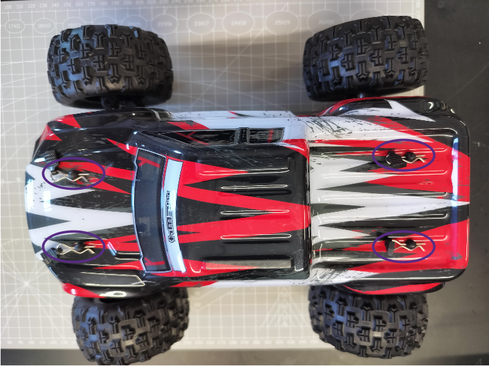
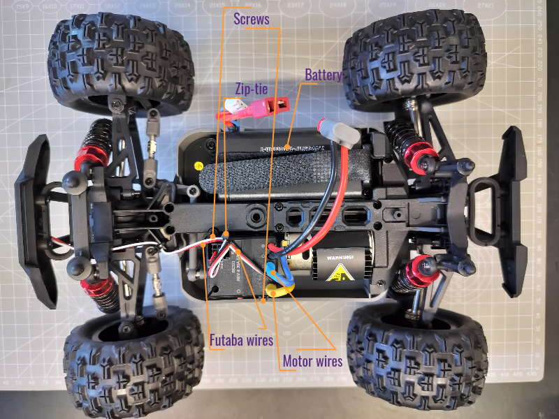

Hardware Customization Guide
We recommend you to follow the orders below to assemble your BearCar
1 ESC Upgrade
The RC car comes with a receiver integrated ESC, which is not ideal for hacking the drivetrain (Thank to DonkeyCar's FAQ). Therefore, we need to put a microcontroller-friendly ESC on the board.
1.1 Body Cover Removal
Remove 4 body clipping pins as circled in the picture below. 
1.2 Stock ESC Removal
- Disconnect and remove the battery.
- Unplug the motor wires (blue and yellow) on the ESC end.
- Unplug two sets of signal wires with Futaba connectors on the ESC 3x3 pin connector.
- Cut the zip-tie on the signal wires.
- Remove two screws locking the stock ESC.
The frame that embracing the steering servo motor will be revealed after removal of the stock ESC.

1.3 Quicrun ESC Installation
- You can simply tape the Quicrun ESC on top of the servo frame.
- Connect the motor wires (yellow and blue) to the new ESC (matching the color is recommended).
- It is recommended to mount the new ESC in direction as below picture shown.
- Set the driving mode to F/R by removing the jumper cap on the top row of the 3x2 header pins.
- Notify the ESC that LiPO battery will be used by placing the jumper cat on the bottom row of the 3x2 header pins.

2 Wire Splitter Assembly
The wire splitter splits the 2 input channel into 4 output channels. The channels in same color are connected together. We recommend you to plug positive wires to the orange channels, and negative wires to the blue channels.
- (Optional) Peel extra skin off the wires. Or the levers may bite the skins instead of the exposed metal (broken circuit).
- Insert wires with male T-plug connector to the input end.
- Insert wires with female T-plug connector to the output end.
- Insert wires with JST-XH connector to the output end.
WARNING: Finger pinch hazard.
2.1 Pre-Assembled

2.2 Post-Assembled

3 Frame Bed Assembly
- Wire Splitter Assembly Installation (2xM2.5-12 screws and 2xM2.5 nuts)
- Stack Raspberry Pi 5 (4xM2.5-15 standoffs)
- Plug in camera ribbon (22-Pin to 15-Pin RPi camera cable)
- Stack Pico carrier board (4xM2.5-6 screws) and Raspberry Pi Pico.
3.1 Splitter Assembly Installation

3.2 RPi Power Expansion Board Installation

3.3 Raspberry Pi 5 Installation

3.4 Pico Carrier Installation

4 Frame Handle Assembly
- Assemble camera module.
- Mount camera to the case.
- Attach camera case assembly to handle.
- Assemble the handle and the bed.
5 Car-Frame Integration
- Attach ESC switch.
- Fasten frame to car body.
- Connect ESC and servo signal wires to Pico carrier board.
- Connect Pico to Pi 5 with Micro-USB cable
- Connect ESC power wires.
- Connect RPi power expansion board power input wires.
- Connect battery.